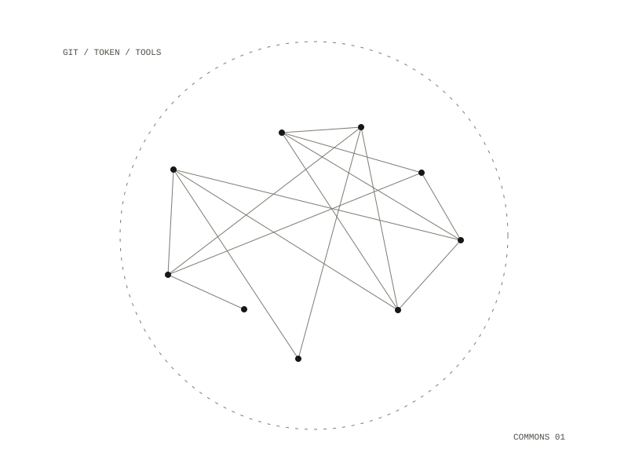

cyborg-support-git-mcp
A private git server that several people share, each driving it with their own assistant. The server is an ordinary git host with repositories, issues and pull requests, private and invite-only, and nothing to do with assistants runs on it.

How it works
The connector is a small translator that runs on each person's own laptop. It turns the git server's REST API into 32 tools an assistant can call, and it talks to the server over plain HTTPS using that person's own access token. There is no hosted endpoint and no place where everyone's tokens are collected, so if one laptop is off, only that person is affected. The connector has no permissions of its own: it can do only what the token it was handed can do.
Who can do what
Access is decided on the git server by three controls: the account, which an admin creates by hand with registration disabled; the token's scopes, which the person sets; and each repository's visibility, set by its owner. A token scoped to reading repositories gives an assistant that can read and never commit, because the API rejects the write. Testing showed that an admin account still reads every private repository when its token's scopes are narrowed, because the check is on the user and not the token, so a day-to-day assistant runs as a separate non-admin account.
Built to install once
The connector uses only the Python standard library, with about 120 lines of hand-written JSON-RPC tested against the official SDK client, so it ships as one file instead of one bundle per platform and Python version. It comes as a double-clickable bundle or a standalone Python file; with the bundle, connecting means a double-click and pasting a token into a dialog. Git runs over HTTPS only, so people authenticate with a token instead of a key. A bridge script connects a local model runtime that does not speak the tool protocol.
The source is a package, and a script concatenates it into the single file that ships; every wire-protocol test runs against both, so the build step cannot quietly change behaviour.
each person's own laptop, talking to one hosted git server over HTTPS
32 tools for repositories, issues and pull requests